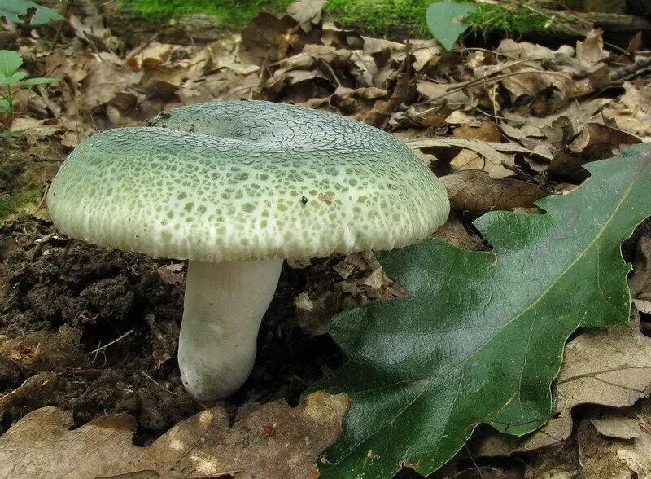

真菌 · 真菌界
青头菌 Russula virescens

菌盖呈青绿色并带龟裂斑纹的野生食用菌，质地脆嫩、味道清甜，是云南等地夏季常见的“家常菌”。
- 分类
- 门担子菌门纲伞菌纲目红菇目科红菇科属红菇属
- 栖息环境
- 阔叶林和针阔混交林的地面，与栎树等树木形成外生菌根
- 地理分布
- 欧洲和东亚，中国云南、四川、贵州、湖南等地有分布
- 保护级别
- 暂无评估（IUCN 未评估，中国未列入重点保护名录）
物种志
青头菌是担子菌门红菇目的外生菌根真菌，子实体单生或群生。菌盖初期球形，后平展并中央下凹，直径 5–12 cm，表面呈浅青绿色至灰绿色，常有不规则的龟裂状斑纹，像一块块青色的补丁；菌肉白色，质地脆；菌褶白色，较密；菌柄白色，粗短，中空；孢子印白色。
青头菌与栎树等阔叶树形成外生菌根，多生于阔叶林和针阔混交林的地面，夏秋季出菇，在中国云南、四川、贵州、湖南等地常见。它菌肉脆嫩、味道清甜，是云南人夏季餐桌上的常见野生菌，可炒食、煮汤或与青椒同炒。青头菌必须充分加热后食用，采摘时要与有毒的红菇属菌类区分，不认识的菌不要采食。
形态与习性
- 菌盖直径 5–12 cm，青绿色并带龟裂斑纹
- 菌肉白色，质地脆嫩
- 菌褶白色，较密
- 菌柄白色，粗短，中空
- 孢子印白色
- 采收期夏秋季，雨后阔叶林中出菇
- 食用性可食，必须充分加热
趣味知识
- 青头菌的菌盖呈青绿色并带龟裂纹，像一块块青色的补丁。
- 它菌肉脆嫩、味道清甜，是云南夏季的家常菌。
- 青头菌与栎树等阔叶树形成外生菌根。
- 红菇属中有有毒种类，不认识的菌不要采食。